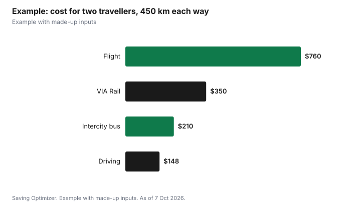

Travel · Canada
Getting Home for the Holidays in Canada 2026: Flights vs VIA Rail vs Intercity Bus vs Driving

This post contains Amazon.ca affiliate links. If you buy through them, Saving Optimizer may earn a commission at no extra cost to you.
The cheapest way home for the holidays in Canada depends on distance, how many people are travelling and how much winter risk you can live with. For one person on a short or medium route, an intercity bus or a VIA Rail discount fare is often cheapest. For two or more people going a few hundred kilometres, driving usually wins on cost if the car is ready for winter. For long distances, flying is often the only practical choice, and booking early matters most. Compare the full door-to-door cost, not just the ticket: bags, airport transfers, parking and fuel can change the answer. Build in a buffer day, because December weather can delay every mode, and weather delays do not qualify for airline compensation.
Key takeaways
- Price the whole trip: ticket, bags, transfers, parking, fuel and time.
- Buses often win for one traveller on short and medium routes.
- Driving often wins for two or more people over a few hundred kilometres.
- VIA Rail: Discount Tuesdays (code TUESDAY) and up to 20% off for CAA members.
- Air passenger compensation is $400 to $1,000 on large airlines, but not for weather.
- Example with made-up inputs: two travellers on a 450 km trip.
Which mode tends to win
| Mode | Tends to win when | Watch out for |
|---|---|---|
| Flight | Long distances, booked early, carry-on only | Bag fees, airport transfers and parking, winter delays |
| VIA Rail | Corridor routes, discount fares, you want to work or relax | Limited cheap seats, fewer trains on some routes |
| Intercity bus | One traveller, short to medium routes, tight budget | Longer travel time, fewer departures, winter delays |
| Driving | Two or more people, a few hundred kilometres, a winter-ready car | Fuel, wear, parking, tolls, fatigue and road conditions |
Flying: book early and count the extras
For holiday flights, the ticket price is only part of the cost. Add fees for bags in the hold, seat selection if you need to sit together, the trip to and from the airport, and airport parking. Basic fares can exclude a full-size carry-on bag; see basic fare bag rules. If you buy a carry-on such as the Wrangler 20-inch hardside spinner, compare its dimensions with your airline's limit for your fare type before you count on skipping a bag fee. Our guides on when to book flights, the cheap flight day myth and alternate airports explain how to find better fares.
Your rights if a flight is delayed or cancelled
The Canadian Transportation Agency explains that what an airline must offer depends on the airline's size and how much control it had over the delay. Large Canadian airlines are Air Canada (including Jazz and Rouge), WestJet, Sunwing, Air Transat, Porter and Flair. Compensation for inconvenience applies only when the delay or cancellation is within the airline's control and not required for safety, you were told 14 days or less before departure, you arrived at least 3 hours late, and you claim in writing within 1 year.
| Arrival delay | Large airlines | Small airlines |
|---|---|---|
| 3 to under 6 hours | $400 | $125 |
| 6 to under 9 hours | $700 | $250 |
| 9 hours or more | $1,000 | $500 |
Extreme weather is outside the airline's control. In that case, the airline must rebook you, but it does not owe compensation. That is why a buffer day matters in December. See refund vs voucher for what to ask for if a flight is cancelled.
VIA Rail: discounts worth knowing
- Discount Tuesdays: VIA Rail says you can book on Tuesdays with the code TUESDAY to save, and sign up for weekly offers.
- CAA members: VIA says CAA members can save up to 20% on all its destinations.
- Book early: VIA says discounted tickets are limited on each train and sold first come, first served.
- Seniors and youth: VIA has a senior offer for travellers 65 and older and a youth and student offer; read the conditions on VIA's site.
- Other discounts: VIA lists offers for Indigenous communities, the Canadian military and groups.
On the Quebec City to Windsor corridor, trains are frequent and can compete well with driving for one or two people, especially once parking is counted. See VIA Rail vs driving on the corridor and VIA Rail for leisure trips.
When the intercity bus beats the train and the car
For one traveller, an intercity bus is often the lowest fare on short and medium routes, especially when booked ahead. Buses also serve some towns with no train station. The trade-offs are longer travel times, fewer departures and the same winter road risks as driving. Operators vary by region, so search the route on the operators' own sites and compare the total with a train fare. A bus tends to beat the train when the train fare is high or the station is far from where you are going, and tends to beat driving when you are travelling alone, would pay for parking at the other end, or would rather not drive in winter. Add the cost of getting to and from the bus terminal.
Driving: cheap per person, but plan for winter
Driving splits the cost across everyone in the car, which is why it often wins for families. Count fuel, tolls, parking at the destination and a share of wear on the car. Then prepare for winter: Ontario advises keeping the fuel tank at least half full, using washer fluid rated to -40°C, and checking Ontario 511 for road conditions and plows before you leave. Pack a winter car emergency kit and make sure your winter tires are on. If you are borrowing or renting a car, check that the insurance covers you.
Build in a buffer
December is the month when weather is most likely to disrupt every mode at once. Plan to arrive at least a day before any event that matters, such as a family dinner or a wedding, and avoid the last flight or train of the day where you can, since a cancellation then often means waiting until the next morning. Keep essential medication, chargers and a change of clothes in your carry-on or day bag rather than in the hold or the trunk. Save the airline, rail or bus company's app and alerts on your phone so you hear about changes early. If you need to change plans, a flexible or refundable fare can cost less than a new ticket bought at the last minute, so compare the fare rules, not just the price.
Students and parents
For students heading home at the end of term, compare a bus and a VIA youth fare first, and book as soon as exam dates are known. Parents driving to pick up a student might combine the trip with moving belongings, but should count two round trips of fuel and time. If a student flies, a carry-on-only fare and a ride from the airport can keep the cost down. See first-year university costs for the wider budget.
Example with made-up inputs
These numbers are an example with made-up inputs, not real fares. Two adults travel 450 km each way. Flight: two return fares at $280 each plus one bag in the hold each way for each person at $35 ($140), and airport transfers of $60 with no parking, $760. VIA Rail: two return fares at $160 each, plus $30 in local transit, $350. Bus: two return fares at $90 each plus $30 in local transit, $210. Driving: 900 km at 8 L/100 km is 72 litres; at $1.50 a litre that is $108 in fuel, plus $40 for parking at the destination, $148. For two people, driving is cheapest; for one person, the bus at $105 would be cheaper than driving alone at $148.
| Mode | Total for two | Per person |
|---|---|---|
| Flight (with bags and transfers) | $760 | $380 |
| VIA Rail | $350 | $175 |
| Intercity bus | $210 | $105 |
| Driving (fuel and parking) | $148 | $74 |

Common mistakes
- Comparing ticket prices without bags, transfers or parking.
- Booking the last possible flight before a family event, with no buffer for weather.
- Assuming a weather delay brings compensation.
- Driving in a storm instead of delaying the trip.
- Waiting for last-minute deals in a peak travel week.
Sources
- Canadian Transportation Agency, Flight delays and cancellations: rebooking, refunds and compensation (airline sizes, conditions, compensation table), otc-cta.gc.ca, page modified 26 Feb 2026, as of 7 Oct 2026.
- VIA Rail, Does VIA Rail offer any discounts or rebates? (Discount Tuesdays, CAA up to 20%, advance purchases), and Senior travellers 65 years and older, viarail.ca, as of 7 Oct 2026.
- Government of Ontario, Winter driving (half tank, -40°C washer fluid, Ontario 511), ontario.ca, as of 7 Oct 2026.
- Fares, bag fees, distances, fuel use and fuel prices in the worked example are made-up inputs.
Frequently asked questions
What is the cheapest way to get home for Christmas in Canada?
For one person on a short or medium route, an intercity bus or a VIA Rail discount fare is often cheapest. For two or more people, driving usually costs less per person. For long distances, an early-booked flight is often the only practical option.
Does VIA Rail have discounts?
Yes. VIA Rail lists Discount Tuesdays with the code TUESDAY, savings of up to 20% for CAA members, limited advance discounts, and offers for seniors 65 and older, youth and students.
How much compensation do I get for a delayed flight in Canada?
If the delay is within a large airline's control and not for safety, $400 for 3 to under 6 hours late, $700 for 6 to under 9 hours and $1,000 for 9 hours or more. Small airlines pay $125, $250 and $500.
Do I get compensation for a weather delay?
No. The Canadian Transportation Agency treats extreme weather as outside the airline's control. The airline must rebook you but does not owe compensation.
Is it cheaper to drive or take the train?
For two or more people, driving is often cheaper per person. For one person, the train or bus can be cheaper once fuel, parking and wear are counted.
How do I prepare to drive home in winter?
Ontario advises keeping the tank at least half full, using washer fluid rated to -40°C and checking 511 for road conditions. Carry a winter emergency kit and use winter tires.
Researched and drafted with AI assistance and fact-checked against official Canadian sources. How we create content.
Disclosure: This page contains Amazon.ca affiliate links. As an Amazon Associate, Saving Optimizer earns from qualifying purchases. Education only, not legal advice.